GEORGE DOUGLAS PAPERS · PRIVATE REVIEW ADDENDUM · 19 SEPTEMBER 2026
Reading the difficult passages
Fifty uncertainty items checked against the scans. An AI-assisted editorial record, with source crops and an explanation for every decision.
Printable report · Corrected pilot excerpts · Method and limitations · Decision data
16Image-supported reading12Clearer duplicate witness2Partial reading2Conjectural completion18Unresolved
Original edition exports are unchanged. Duplicate-witness notes do not make missing or hidden letters readable on the damaged scan. This selected sample is not an estimate of the other 1,150 items. No independent human verification is claimed.
50 items shown
02-003-U001
Image-supported reading · 02-003-P01 · source scan 3
Earlier annotation: [[Of?]]
[[Of?]] all the thoughts enclosed in the language of Inspiration [[lost:
Text-only review proposal: Of
Image review: Of
The rounded opening letter and looped descending f survive at the ragged left edge. Native-resolution inspection supports Of; the sentence supplies corroboration, not the missing strokes.
High for the stated literal reading within this AI review; not independently human verified.
Inspect 1 source crop(s)
02-003-opening · ACU CRS MS5 - 02 - L. Douglas Sermon Notes, 16 Feb 1883.pdf · PDF scan 3
Native crop [160, 200, 1500, 560], after 0° counterclockwise rotation. Open original at full size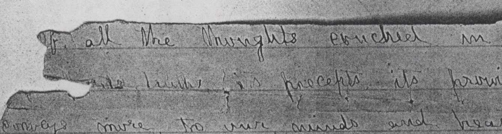
04-002-U002
Unresolved · 04-002-P03 · source scan 2
Earlier annotation: [[Walkers?]]
]]. I was detailed to go down on Red River & join the Command at [[Walkers?]] Bend - but it has not passed I expect them Every [[illegible]] T
Text-only review proposal: Conflicting independent readings: Walker's Bend
Image review: Walkers remains tentative
The opening W and tall internal strokes fit Walkers, but degraded ink and the ruled line interfere with the ending. Neither an apostrophe nor the full place-name spelling is secure.
Insufficient evidence to remove the marker.
Inspect 1 source crop(s)
04-002-place · ACU CRS MS5 - 04 - Folder 1, Correspondence and Loan Papers.pdf · PDF scan 2
Native crop [350, 850, 2040, 1110], after 180° counterclockwise rotation. Open original at full size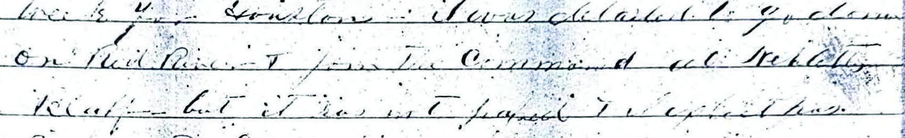
04-002-U007
Image-supported reading · 04-002-P04 · source scan 2
Earlier annotation: [[Alfred?]]
egible]] furlough I suppose you have heard of the death of Uncle [[Alfred?]] he died on the 5th of June from a wound Recd on the 18th of May
Text-only review proposal: Alfred
Image review: Alfred
The name after Uncle shows A, a tall l, descending f and the final d. The separate letter on 06-097 also visibly names Uncle Alfred and reports his death and wound interval. This does not establish Nathaniel Lynn Douglas’s father.
High for the stated literal reading within this AI review; not independently human verified.
Inspect 2 source crop(s)
04-002-alfred · ACU CRS MS5 - 04 - Folder 1, Correspondence and Loan Papers.pdf · PDF scan 2
Native crop [350, 1340, 2040, 1690], after 180° counterclockwise rotation. Open original at full size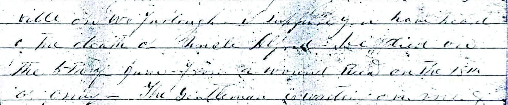
06-097-alfred · ACU CRS MS5 - 06 - Folder 3, Correspondence and Legal Papers.pdf · PDF scan 97
Native crop [735, 1640, 1760, 2040], after 180° counterclockwise rotation. Open original at full size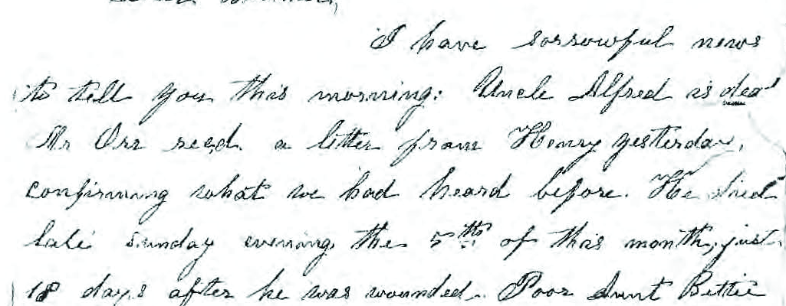
04-002-U013
Unresolved · 04-002-P05 · source scan 2
Earlier annotation: [[J. H. Scott?]]
[[illegible: closing]] / [[J. H. Scott?]]
Text-only review proposal: Conflicting independent readings: J. H.? Scott
Image review: J. H. Scott remains tentative
The enlarged signature suggests J H and a surname beginning Sc, but fading interrupts the ending. Preserve the uncertain full signature rather than resolving it from an expected correspondent.
Insufficient evidence to remove the marker.
Inspect 1 source crop(s)
04-002-signature · ACU CRS MS5 - 04 - Folder 1, Correspondence and Loan Papers.pdf · PDF scan 2
Native crop [1250, 2090, 2040, 2350], after 180° counterclockwise rotation. Open original at full size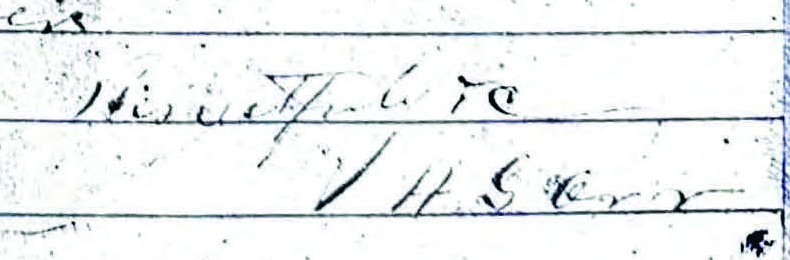
04-017-U001
Unresolved · 04-017-P01 · source scan 17
Earlier annotation: [[Yellow?]]
[[Yellow?]] Branch [[illegible]] / Sept 18th 1863
Text-only review proposal: Conflicting independent readings: Yellow Branch / Willow Branch
Image review: Yellow / Willow unresolved
The initial and following short strokes are obscured by a dense blot. Both proposals remain possible; contrast does not isolate the identifying letters.
Insufficient evidence to remove the marker.
Inspect 1 source crop(s)
04-017-heading · ACU CRS MS5 - 04 - Folder 1, Correspondence and Loan Papers.pdf · PDF scan 17
Native crop [1300, 50, 2050, 290], after 90° counterclockwise rotation. Open original at full size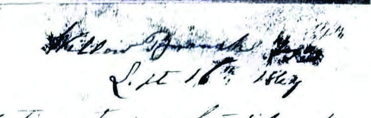
04-017-U003
Image-supported reading · 04-017-P02 · source scan 17
Earlier annotation: [[Denmark?]]
and if Silence is the response I may know Something is wrong in [[Denmark?]], & will call off my hounds. But as I am floating in rather a dul
Text-only review proposal: Denmark
Image review: Denmark
The word after wrong in has a D-like opening, en, m and the final ark strokes. The familiar phrase agrees with, but is not substituted for, the visible writing.
High for the stated literal reading within this AI review; not independently human verified.
Inspect 1 source crop(s)
04-017-denmark · ACU CRS MS5 - 04 - Folder 1, Correspondence and Loan Papers.pdf · PDF scan 17
Native crop [200, 620, 2086, 810], after 90° counterclockwise rotation. Open original at full size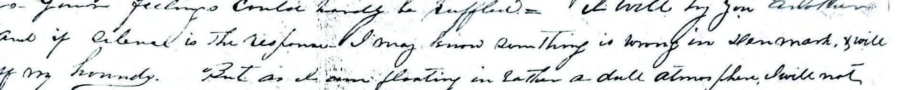
04-043-U001
Clearer duplicate witness · 04-043-P03 · source scan 43
Earlier annotation: [[obscured: fold]]
nown who having Been examined by Me Privily and apart and out of [[obscured: fold]] that they Signed the Same of their own free will and accord with
Text-only review proposal: hearing of their said Husbands they the said Laura Robinson and Susanna Bell acknowledged (from 04-044-P01)
Image review: hearing of their said Husbands they the said Laura Robinson and Susanna Bell acknowledged
The fold in 04-043 hides this span. Scan 04-044 shows the same handwriting before and after it and exposes the intervening words. Retain the obstruction marker on 04-043 and supply a cited witness note; these words were not recovered from the fold itself.
High for the overlap/link; wording must be attributed to the clearer scan.
Inspect 2 source crop(s)
04-043-fold · ACU CRS MS5 - 04 - Folder 1, Correspondence and Loan Papers.pdf · PDF scan 43
Native crop [200, 1000, 1820, 1680], after 0° counterclockwise rotation. Open original at full size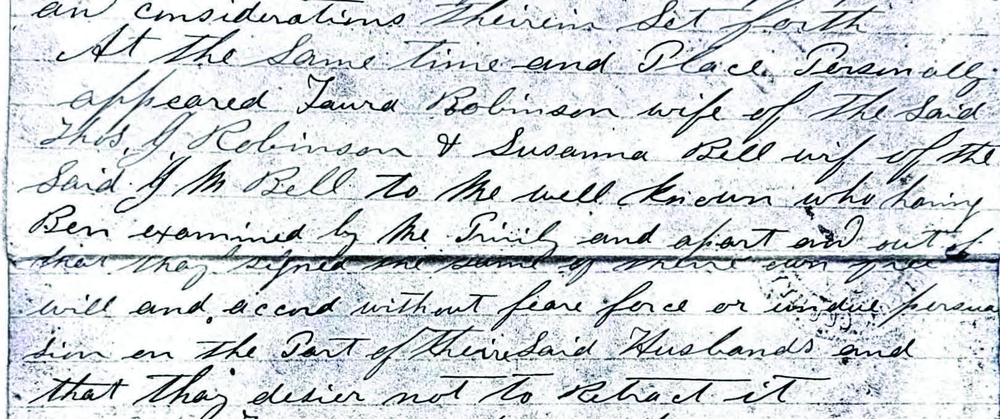
04-044-opening · ACU CRS MS5 - 04 - Folder 1, Correspondence and Loan Papers.pdf · PDF scan 44
Native crop [0, 0, 1600, 640], after 0° counterclockwise rotation. Open original at full size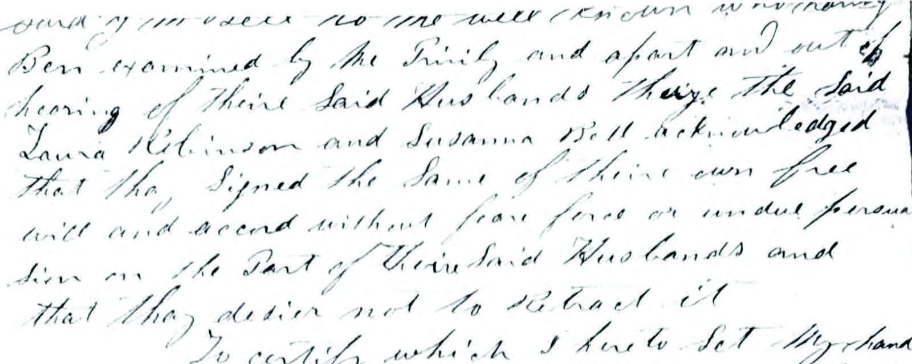
04-043-U002
Image-supported reading · 04-043-P04 · source scan 43
Earlier annotation: [[S. M.?]]
y hand and official Seal the 26th day of February A D 1875 / No 76 / [[S. M.?]] Hancock N P E C / Texas Precinct No 8 / [[seal]]
Text-only review proposal: Conflicting independent readings: S. M. / Wm
Image review: Wm L
The clearer overlapping image shows the W, raised m and separate L before Hancock. Comparable signatures on 05-151 and 05-157 have the same forms. Do not expand Wm to William in the literal transcript. The adjacent precinct number is outside this item and still needs review.
High for the stated literal reading within this AI review; not independently human verified.
Inspect 4 source crop(s)
04-043-signature · ACU CRS MS5 - 04 - Folder 1, Correspondence and Loan Papers.pdf · PDF scan 43
Native crop [200, 1650, 1780, 2040], after 0° counterclockwise rotation. Open original at full size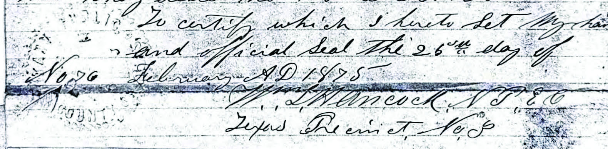
04-044-signature · ACU CRS MS5 - 04 - Folder 1, Correspondence and Loan Papers.pdf · PDF scan 44
Native crop [30, 550, 1550, 1020], after 0° counterclockwise rotation. Open original at full size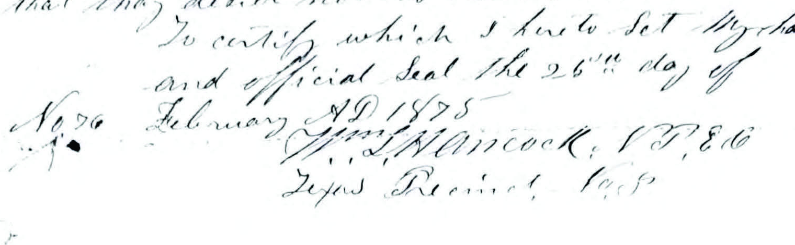
05-151-hancock · ACU CRS MS5 - 05 - Folder 2, Correspondence and Legal Papers.pdf · PDF scan 151
Native crop [300, 2820, 1150, 3140], after 180° counterclockwise rotation. Open original at full size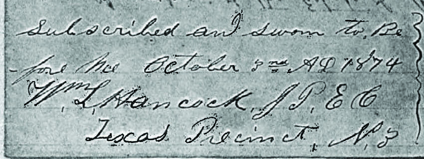
05-157-hancock · ACU CRS MS5 - 05 - Folder 2, Correspondence and Legal Papers.pdf · PDF scan 157
Native crop [500, 1580, 1620, 1940], after 0° counterclockwise rotation. Open original at full size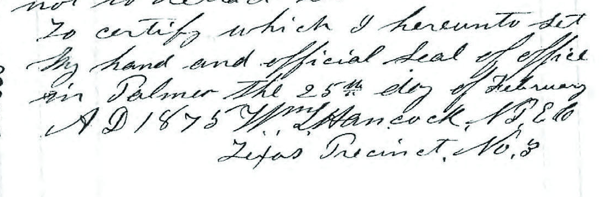
04-043-U003
Image-supported reading · 04-043-P06 · source scan 43
Earlier annotation: [[Rusk?]]
The State of Texas / County of [[Rusk?]]
Text-only review proposal: Conflicting independent readings: Hood
Image review: Hood
Both scans show an H followed by two rounded o forms and a final d crossing the flourish below. Rusk does not fit those letters. The county name is not inferred solely from Glen Rose.
High for the stated literal reading within this AI review; not independently human verified.
Inspect 2 source crop(s)
04-043-county · ACU CRS MS5 - 04 - Folder 1, Correspondence and Loan Papers.pdf · PDF scan 43
Native crop [260, 2160, 1800, 2540], after 0° counterclockwise rotation. Open original at full size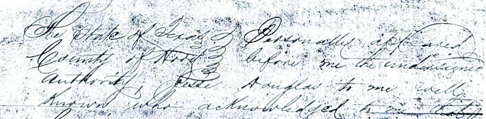
04-044-county · ACU CRS MS5 - 04 - Folder 1, Correspondence and Loan Papers.pdf · PDF scan 44
Native crop [50, 1050, 1600, 1470], after 0° counterclockwise rotation. Open original at full size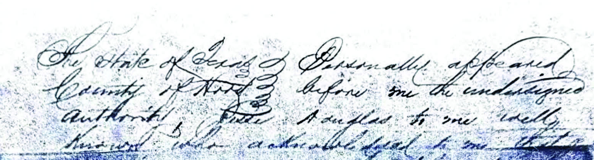
04-043-U006
Clearer duplicate witness · 04-043-P08 · source scan 43
Earlier annotation: [[lost: reproduced portion ends]]
affix my Official Seal at Office in [[illegible]] on the 9th day [[lost: reproduced portion ends]]
Text-only review proposal: text continues in 04-044-P06 ('March A. D. 1875')
Image review: Continuation includes March A. D. 1875
Matching handwriting and the same date line establish the overlap. The later scan exposes March A. D. 1875 below the cropped ending. Keep the loss marker and link 04-044-P06; do not invent the connector still at the torn edge.
High for the overlap/link; wording must be attributed to the clearer scan.
Inspect 2 source crop(s)
04-043-ending · ACU CRS MS5 - 04 - Folder 1, Correspondence and Loan Papers.pdf · PDF scan 43
Native crop [230, 2730, 1810, 3132], after 0° counterclockwise rotation. Open original at full size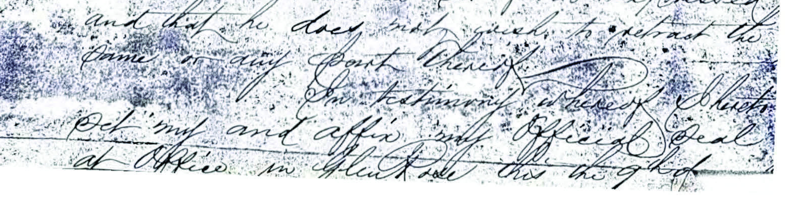
04-044-ending · ACU CRS MS5 - 04 - Folder 1, Correspondence and Loan Papers.pdf · PDF scan 44
Native crop [80, 1710, 1610, 2428], after 0° counterclockwise rotation. Open original at full size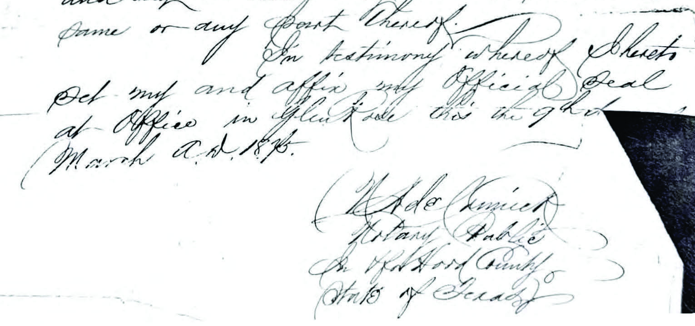
04-044-U001
Clearer duplicate witness · 04-044-P01 · source scan 44
Earlier annotation: [[lost: reproduced portion begins mid-sentence]]
[[lost: reproduced portion begins mid-sentence]] to me well known [[lost: top edge]] / Been examined by Me Privily
Text-only review proposal: text begins in 04-043-P03
Image review: Opening is preserved in 04-043-P03
The names, clause order and repeated lower lines identify this as the same acknowledgment. The preceding image preserves At the Same time and Place Personally appeared Laura Robinson ... wife of the said J. M. Bell. Preserve the crop boundary and cite that witness instead of implying the words are visible on scan 44.
High for the overlap/link; wording must be attributed to the clearer scan.
Inspect 2 source crop(s)
04-044-opening · ACU CRS MS5 - 04 - Folder 1, Correspondence and Loan Papers.pdf · PDF scan 44
Native crop [0, 0, 1600, 640], after 0° counterclockwise rotation. Open original at full size04-043-fold · ACU CRS MS5 - 04 - Folder 1, Correspondence and Loan Papers.pdf · PDF scan 43
Native crop [200, 1000, 1820, 1680], after 0° counterclockwise rotation. Open original at full size04-044-U003
Image-supported reading · 04-044-P02 · source scan 44
Earlier annotation: [[S. M.?]]
y hand and official Seal the 26th day of February A D 1875 / No 76 / [[S. M.?]] Hancock N P E C / Texas Precinct No 8
Text-only review proposal: Conflicting independent readings: S. M. / Wm
Image review: Wm L
The W with raised m, followed by L and the distinct capital H of Hancock, can be compared in three signatures. This is the same signature as 04-043-U002, so it is a second register item, not a second independent recovery.
High for the stated literal reading within this AI review; not independently human verified.
Inspect 3 source crop(s)
04-044-signature · ACU CRS MS5 - 04 - Folder 1, Correspondence and Loan Papers.pdf · PDF scan 44
Native crop [30, 550, 1550, 1020], after 0° counterclockwise rotation. Open original at full size05-151-hancock · ACU CRS MS5 - 05 - Folder 2, Correspondence and Legal Papers.pdf · PDF scan 151
Native crop [300, 2820, 1150, 3140], after 180° counterclockwise rotation. Open original at full size05-157-hancock · ACU CRS MS5 - 05 - Folder 2, Correspondence and Legal Papers.pdf · PDF scan 157
Native crop [500, 1580, 1620, 1940], after 0° counterclockwise rotation. Open original at full size04-079-U002
Image-supported reading · 04-079-P01 · source scan 79
Earlier annotation: [[Burky?]]
Family, and it gives me some hopes that health may be enjoyed in [[Burky?]], as well as other places. This County although reputed to be one
Text-only review proposal: Brushy
Image review: Brushy
The continuous forward writing shows Br-u-sh-y across the interference from reverse-side writing. The long s/h strokes and descending y support Brushy, not Burky.
High for the stated literal reading within this AI review; not independently human verified.
Inspect 1 source crop(s)
04-079-brushy · ACU CRS MS5 - 04 - Folder 1, Correspondence and Loan Papers.pdf · PDF scan 79
Native crop [40, 1180, 1690, 1510], after 0° counterclockwise rotation. Open original at full size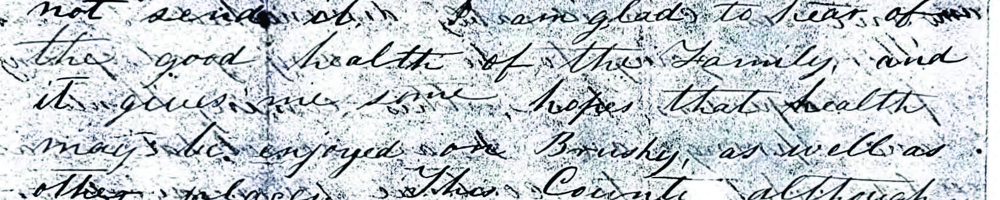
04-080-U001
Image-supported reading · 04-080-P01 · source scan 80
Earlier annotation: [[Hedlie?]]
live here I could make a tolerably fair living. I am now helping [[Hedlie?]] a large Livery Stable, my wages are $1,50 cts pr day, but after
Text-only review proposal: build
Image review: build
The b-u-i-l-d forms in helping build agree with the same writer’s later build in build a house of worship on this page. This same-hand comparison is stronger than the carpentry context alone.
High for the stated literal reading within this AI review; not independently human verified.
Inspect 2 source crop(s)
04-080-build · ACU CRS MS5 - 04 - Folder 1, Correspondence and Loan Papers.pdf · PDF scan 80
Native crop [20, 880, 1820, 1160], after 0° counterclockwise rotation. Open original at full size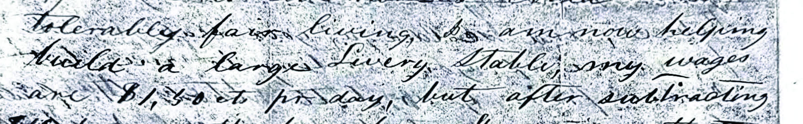
04-080-build-exemplar · ACU CRS MS5 - 04 - Folder 1, Correspondence and Loan Papers.pdf · PDF scan 80
Native crop [30, 1720, 1830, 1930], after 0° counterclockwise rotation. Open original at full size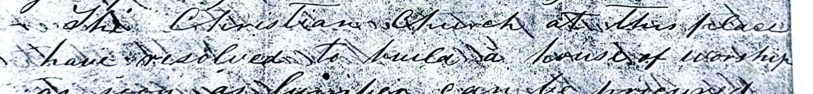
05-024-U001
Image-supported reading · 05-024-P02 · source scan 24
Earlier annotation: [[A?]]
Filed Oct 29th 1852 at / 2½ Oclock P.M. / By [[A?]] Hawkins Clk / C.C.E.C.
Text-only review proposal: B (Benj. F. Hawkins)
Image review: F
The initial immediately before Hawkins has the upper flourish and lower return of F, matching the F in Benj. F. Hawkins on 05-026; it does not have the two bowls of B. The preceding word, currently transcribed By, may itself be a compact Benj abbreviation and needs separate whole-line review.
High for the stated literal reading within this AI review; not independently human verified.
Inspect 2 source crop(s)
05-024-docket · ACU CRS MS5 - 05 - Folder 2, Correspondence and Legal Papers.pdf · PDF scan 24
Native crop [820, 730, 1520, 1170], after 270° counterclockwise rotation. Open original at full size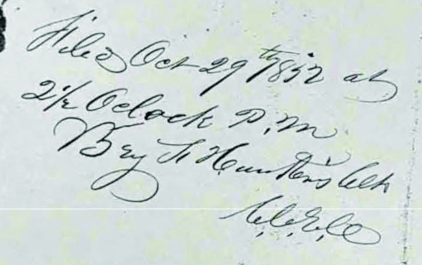
05-026-hawkins · ACU CRS MS5 - 05 - Folder 2, Correspondence and Legal Papers.pdf · PDF scan 26
Native crop [770, 990, 1890, 1260], after 0° counterclockwise rotation. Open original at full size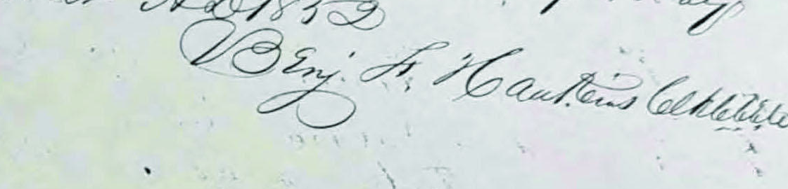
05-035-U001
Image-supported reading · 05-035-P01 · source scan 35
Earlier annotation: [[Sat?]]
ouglas / from Niece / Sarah Gail (Douglas) Headrick / Bardsdale, Calif / [[Sat?]] 29, 1893
Text-only review proposal: Sep
Image review: Sat
The later identifying slip visibly has S-a-t, including a closed a and tall crossed t; no descending p is visible. The contextual review proposed Sep using the adjacent letter’s transcript. Preserve Sat as the slip’s literal wording. The companion heading/date should be assessed separately; this pilot does not normalize its month or weekday.
High for the stated literal reading within this AI review; not independently human verified.
Inspect 2 source crop(s)
05-035-slip · ACU CRS MS5 - 05 - Folder 2, Correspondence and Legal Papers.pdf · PDF scan 35
Native crop [640, 150, 1500, 890], after 0° counterclockwise rotation. Open original at full size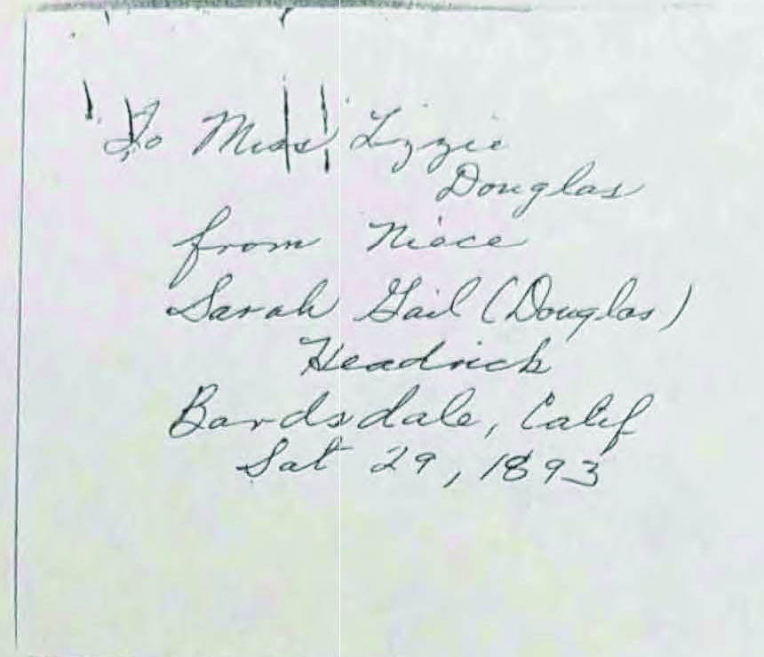
05-036-heading · ACU CRS MS5 - 05 - Folder 2, Correspondence and Legal Papers.pdf · PDF scan 36
Native crop [450, 0, 1710, 600], after 0° counterclockwise rotation. Open original at full size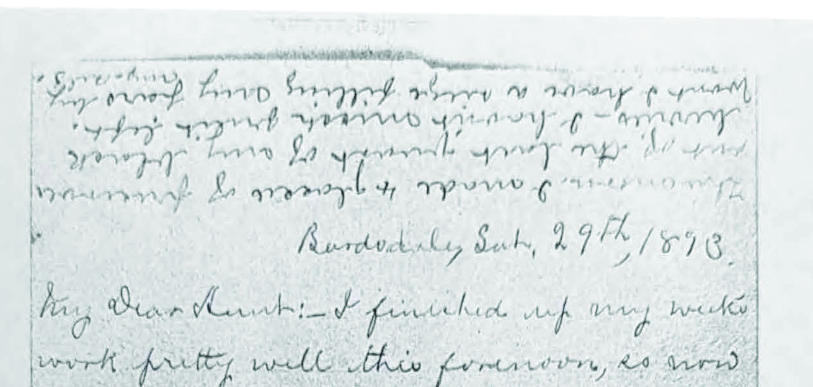
05-037-U001
Image-supported reading · 05-037-P01 · source scan 37
Earlier annotation: [[Chadens?]]
r) with the store. One day he came from the P.O. & said “Grandma [[Chadens?]] house isn’t togezzer is it Mamma?” “Ours is though” He noticed t
Text-only review proposal: Chadsey's
Image review: Chadsey’s
The name is split across two manuscript lines: Chad at the end of one, sey’s at the start of the next. Reading both line ends together resolves the earlier collapsed Chadens guess.
High for the stated literal reading within this AI review; not independently human verified.
Inspect 1 source crop(s)
05-037-chadsey · ACU CRS MS5 - 05 - Folder 2, Correspondence and Legal Papers.pdf · PDF scan 37
Native crop [420, 900, 1590, 1200], after 0° counterclockwise rotation. Open original at full size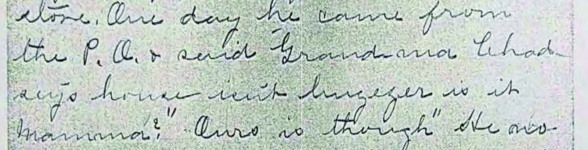
05-130-U001
Unresolved · 05-130-P03 · source scan 130
Earlier annotation: [[lost: torn edge]]
Ellis this fall on a visit But when I was ready I was sick. then [[lost: torn edge]] My recovery Nancy was taken with Bordering on Congestion. previo
Text-only review proposal: No proposal
Image review: Loss remains
The torn edge removes the beginning of the line before My recovery. Tonal changes cannot recover paper that is absent. A connective such as on would be a conjecture, not a reading.
Insufficient evidence to remove the marker.
Inspect 1 source crop(s)
05-130-loss · ACU CRS MS5 - 05 - Folder 2, Correspondence and Legal Papers.pdf · PDF scan 130
Native crop [180, 1770, 1700, 2470], after 180° counterclockwise rotation. Open original at full size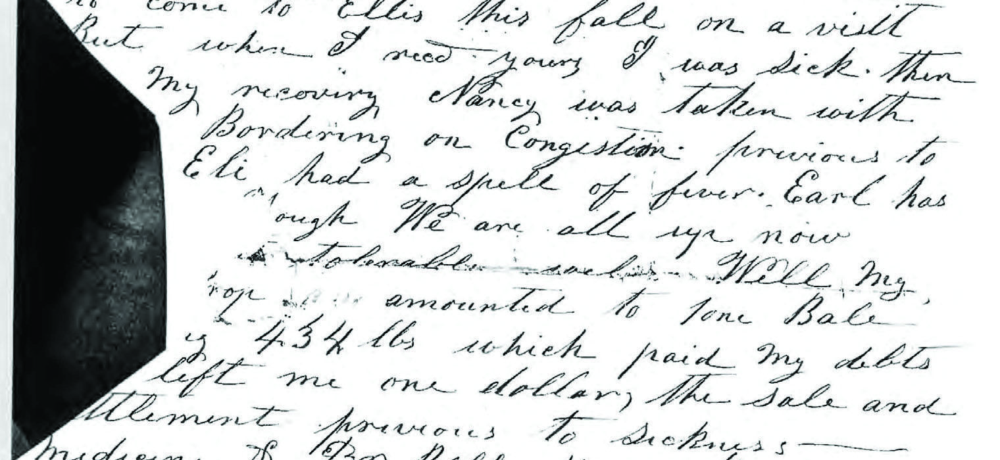
05-130-U005
Conjectural completion · 05-130-P04 · source scan 130
Earlier annotation: [[lost: torn edge]]
[[deleted: illegible]] Well My [[lost: torn edge]]rop amounted to one Bale [[lost: torn edge]] 434 lbs which paid M
Text-only review proposal: [C]rop
Image review: Conjectural [C]rop
The remaining rop and the cotton-bale context make crop a strong completion, but the C is physically missing. Keep the loss marker in the literal text and put [C]rop only in a clearly labeled conjectural note.
Plausible editorial supply; no visible evidence for missing letters.
Inspect 1 source crop(s)
05-130-loss · ACU CRS MS5 - 05 - Folder 2, Correspondence and Legal Papers.pdf · PDF scan 130
Native crop [180, 1770, 1700, 2470], after 180° counterclockwise rotation. Open original at full size05-130-U008
Conjectural completion · 05-130-P04 · source scan 130
Earlier annotation: [[lost: torn edge]]
id My debts [[lost: torn edge]] Left me one dollar, the sale and [[lost: torn edge]]ttlement previous to sickness — [[lost: torn edge]] medicine & Dr
Text-only review proposal: [se]ttlement
Image review: Conjectural [se]ttlement
The surviving ttlement and the phrase the sale and favor settlement. The beginning is absent at the torn edge; [se] is editorial supply and cannot be classed as image recovery.
Plausible editorial supply; no visible evidence for missing letters.
Inspect 1 source crop(s)
05-130-loss · ACU CRS MS5 - 05 - Folder 2, Correspondence and Legal Papers.pdf · PDF scan 130
Native crop [180, 1770, 1700, 2470], after 180° counterclockwise rotation. Open original at full size05-142-U002
Image-supported reading · 05-142-P03 · source scan 142
Earlier annotation: [[Ellis?]]
ate block: recording certificate]] / THE STATE OF TEXAS, / County of [[Ellis?]] / I, [[J. R. Champion?]] Clerk of the County Court of said County,
Text-only review proposal: Ellis
Image review: Ellis
Despite fading, the opening looped E, two l ascenders and final is are visible in the county field. The second occurrence at the foot of this certificate has the same letter pattern.
High for the stated literal reading within this AI review; not independently human verified.
Inspect 1 source crop(s)
05-142-certificate · ACU CRS MS5 - 05 - Folder 2, Correspondence and Legal Papers.pdf · PDF scan 142
Native crop [230, 2690, 1900, 3280], after 0° counterclockwise rotation. Open original at full size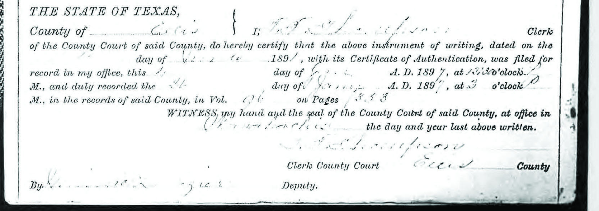
05-142-U004
Unresolved · 05-142-P03 · source scan 142
Earlier annotation: [[June 4?]]
t the above instrument of writing, dated on the [[blank]] day of [[June 4?]] 1891, with its Certificate of Authentication, was filed for reco
Text-only review proposal: June 4
Image review: June 4 remains tentative
Faint traces fit June 4, but the numeral and some connecting strokes are too weak for a secure literal reading here. The date on another part of the instrument is contextual support, not a replacement for this field.
Insufficient evidence to remove the marker.
Inspect 1 source crop(s)
05-142-certificate · ACU CRS MS5 - 05 - Folder 2, Correspondence and Legal Papers.pdf · PDF scan 142
Native crop [230, 2690, 1900, 3280], after 0° counterclockwise rotation. Open original at full size05-142-U010
Unresolved · 05-142-P03 · source scan 142
Earlier annotation: [[Waxahachie?]]
nd and the seal of the County Court of said County, at office in [[Waxahachie?]] the day and year last above written. / [[J. R. Champion?]] / Clerk C
Text-only review proposal: Waxahachie
Image review: Waxahachie remains tentative
The overall word shape and several ascenders fit Waxahachie; too many central strokes remain faint after contrast and gamma adjustment. Preserve the marker rather than resolving from the usual clerk’s-office formula.
Insufficient evidence to remove the marker.
Inspect 1 source crop(s)
05-142-certificate · ACU CRS MS5 - 05 - Folder 2, Correspondence and Legal Papers.pdf · PDF scan 142
Native crop [230, 2690, 1900, 3280], after 0° counterclockwise rotation. Open original at full size05-142-U012
Image-supported reading · 05-142-P03 · source scan 142
Earlier annotation: [[Ellis?]]
year last above written. / [[J. R. Champion?]] / Clerk County Court [[Ellis?]] County / By [[illegible]] Deputy.
Text-only review proposal: Ellis
Image review: Ellis
At the foot, the E, paired l strokes and is ending are clearer than in the header and agree with it. The handwriting supports Ellis without needing the county’s expected identity.
High for the stated literal reading within this AI review; not independently human verified.
Inspect 1 source crop(s)
05-142-certificate · ACU CRS MS5 - 05 - Folder 2, Correspondence and Legal Papers.pdf · PDF scan 142
Native crop [230, 2690, 1900, 3280], after 0° counterclockwise rotation. Open original at full size05-146-U001
Clearer duplicate witness · 05-146-P01 · source scan 146
Earlier annotation: [[lost: cropped top]]
[[separate block: repeated portion of preceding scan]] / [[lost: cropped top]] 18 varas an Elm 6 inch in dia brs S 67° W 20 varas Thence S 60°
Text-only review proposal: text preserved in 05-145-P03
Image review: Survey description continues from 05-145-P03
The same lines beginning 18 varas an Elm recur on both scans. The preceding image exposes the survey text above that point, including the cedar bearing. Retain the cropped-top marker and link the earlier scan; this does not count as newly reading the same survey twice.
High for the overlap/link; wording must be attributed to the clearer scan.
Inspect 2 source crop(s)
05-146-top · ACU CRS MS5 - 05 - Folder 2, Correspondence and Legal Papers.pdf · PDF scan 146
Native crop [250, 590, 1970, 1120], after 0° counterclockwise rotation. Open original at full size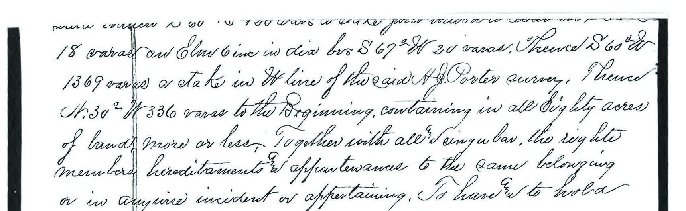
05-145-survey · ACU CRS MS5 - 05 - Folder 2, Correspondence and Legal Papers.pdf · PDF scan 145
Native crop [320, 2030, 1960, 2950], after 180° counterclockwise rotation. Open original at full size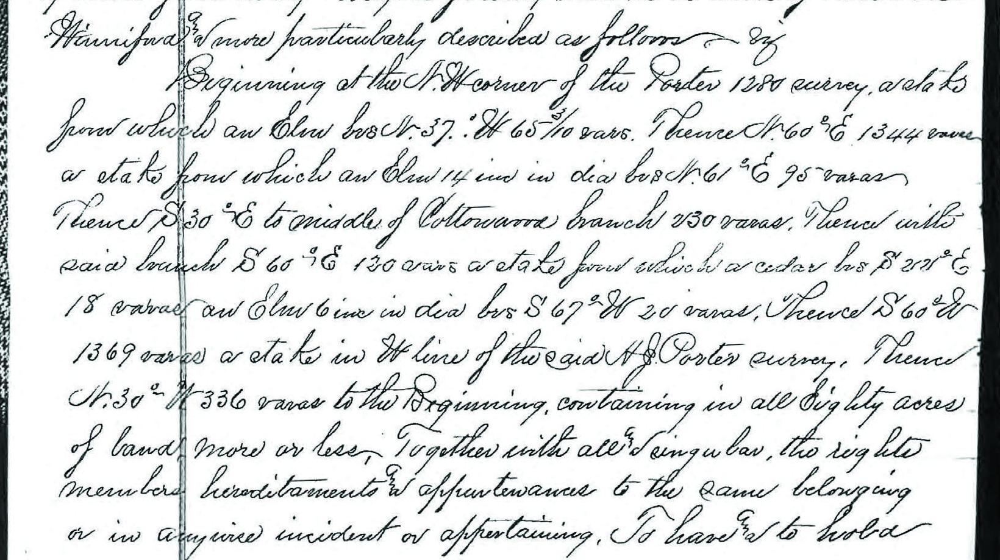
05-146-U002
Unresolved · 05-146-P02 · source scan 146
Earlier annotation: [[H. D. Winniford?]]
ny part thereof Witness our hands this October the 13th A D 1890 / [[H. D. Winniford?]] / Walter Roper / Mary Roper / Alice E [[McCrary?]] / [[illegible: signat
Text-only review proposal: H. D. Winniford
Image review: H. D. Winniford remains tentative
The surname is largely visible, but the second initial is washed out and can resemble another letter. The grantor’s spelled-out name elsewhere supports H. D.; it does not make the signature’s exact lettering secure.
Insufficient evidence to remove the marker.
Inspect 1 source crop(s)
05-146-signatures · ACU CRS MS5 - 05 - Folder 2, Correspondence and Legal Papers.pdf · PDF scan 146
Native crop [360, 1950, 1950, 2460], after 0° counterclockwise rotation. Open original at full size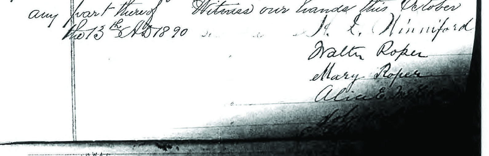
05-146-U003
Unresolved · 05-146-P02 · source scan 146
Earlier annotation: [[McCrary?]]
th A D 1890 / [[H. D. Winniford?]] / Walter Roper / Mary Roper / Alice E [[McCrary?]] / [[illegible: signatures in shadow]]
Text-only review proposal: McCrary
Image review: McCrary remains tentative
Alice E and the beginning of the surname can be followed, but the end enters a heavy shadow. Brightening does not separate all the letters. The acknowledgment identifies Alice E McCrary, but that identity alone does not verify this signature.
Insufficient evidence to remove the marker.
Inspect 1 source crop(s)
05-146-signatures · ACU CRS MS5 - 05 - Folder 2, Correspondence and Legal Papers.pdf · PDF scan 146
Native crop [360, 1950, 1950, 2460], after 0° counterclockwise rotation. Open original at full size05-146-U004
Unresolved · 05-146-P02 · source scan 146
Earlier annotation: [[illegible: signatures in shadow]]
[H. D. Winniford?]] / Walter Roper / Mary Roper / Alice E [[McCrary?]] / [[illegible: signatures in shadow]]
Text-only review proposal: (grantors named in the body: E L Winniford, Millie Winniford, John McCrary)
Image review: Signatures in shadow remain unread
Brightening the shadow exposes additional pen strokes but does not establish complete names or their order. Names of other grantors in the deed body must not be presented as recovered signatures.
Insufficient evidence to remove the marker.
Inspect 1 source crop(s)
05-146-signatures · ACU CRS MS5 - 05 - Folder 2, Correspondence and Legal Papers.pdf · PDF scan 146
Native crop [360, 1950, 1950, 2460], after 0° counterclockwise rotation. Open original at full size05-146-U005
Unresolved · 05-146-P03 · source scan 146
Earlier annotation: [[lost: cropped beginning]]
[[separate block: partial acknowledgment]] / [[lost: cropped beginning]] / to be the person whose name is subscribed to the foregoing instr
Text-only review proposal: No proposal
Image review: Cropped beginning remains missing
Both overlapping scans begin after the acknowledgment’s opening. The clearer duplicate helps with its date, but does not supply the person’s name or the missing opening clause.
Insufficient evidence to remove the marker.
Inspect 2 source crop(s)
05-146-date · ACU CRS MS5 - 05 - Folder 2, Correspondence and Legal Papers.pdf · PDF scan 146
Native crop [300, 2410, 1960, 2820], after 0° counterclockwise rotation. Open original at full size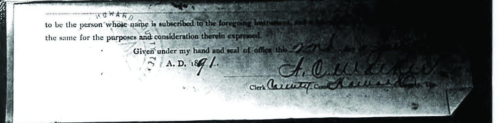
05-147-date · ACU CRS MS5 - 05 - Folder 2, Correspondence and Legal Papers.pdf · PDF scan 147
Native crop [300, 585, 1930, 990], after 0° counterclockwise rotation. Open original at full size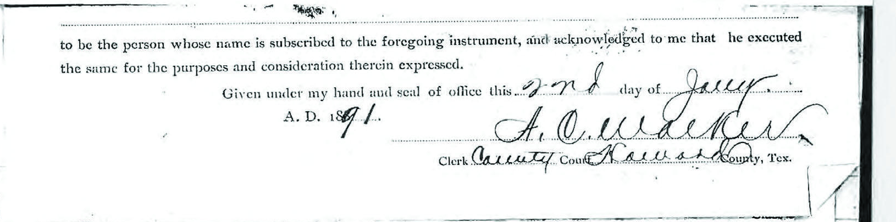
05-146-U006
Clearer duplicate witness · 05-146-P03 · source scan 146
Earlier annotation: [[2nd?]]
n therein expressed. / Given under my hand and seal of office this [[2nd?]] day of [[illegible]] A. D. 1891. / A. O. Walker / Clerk County Court
Text-only review proposal: 2nd
Image review: 2nd, verified on 05-147-P01
The shaded date on scan 146 is consistent with 2nd; scan 147 exposes the same dated line and clearly reads 2nd. Record the witness explicitly rather than claiming all three characters are clear in the shaded scan.
High for the overlap/link; wording must be attributed to the clearer scan.
Inspect 2 source crop(s)
05-146-date · ACU CRS MS5 - 05 - Folder 2, Correspondence and Legal Papers.pdf · PDF scan 146
Native crop [300, 2410, 1960, 2820], after 0° counterclockwise rotation. Open original at full size05-147-date · ACU CRS MS5 - 05 - Folder 2, Correspondence and Legal Papers.pdf · PDF scan 147
Native crop [300, 585, 1930, 990], after 0° counterclockwise rotation. Open original at full size05-146-U007
Clearer duplicate witness · 05-146-P03 · source scan 146
Earlier annotation: [[illegible]]
sed. / Given under my hand and seal of office this [[2nd?]] day of [[illegible]] A. D. 1891. / A. O. Walker / Clerk County Court Navarro County, Tex.
Text-only review proposal: Jany
Image review: Jany, verified on 05-147-P01
The date line, seal and A. O. Walker signature align across the scans. The clearer copy shows the abbreviation Jany. Preserve that abbreviation in a supplied witness note, not the expanded January.
High for the overlap/link; wording must be attributed to the clearer scan.
Inspect 2 source crop(s)
05-146-date · ACU CRS MS5 - 05 - Folder 2, Correspondence and Legal Papers.pdf · PDF scan 146
Native crop [300, 2410, 1960, 2820], after 0° counterclockwise rotation. Open original at full size05-147-date · ACU CRS MS5 - 05 - Folder 2, Correspondence and Legal Papers.pdf · PDF scan 147
Native crop [300, 585, 1930, 990], after 0° counterclockwise rotation. Open original at full size05-146-U008
Clearer duplicate witness · 05-146-P04 · source scan 146
Earlier annotation: [[illegible: remainder in shadow and cropped]]
d. And the said Mary Roper wife of the said Walter Roper, having [[illegible: remainder in shadow and cropped]]
Text-only review proposal: text preserved in 05-147-P02
Image review: Remainder of Mary Roper’s acknowledgment is visible on 05-147-P02
The printed and inserted handwritten names align exactly. The clearer scan exposes the remainder beginning been examined by me privily and apart from her husband and its dated signature. The shadow/crop marker remains on scan 146, with a reference to the complete acknowledgment.
High for the overlap/link; wording must be attributed to the clearer scan.
Inspect 2 source crop(s)
05-146-bottom · ACU CRS MS5 - 05 - Folder 2, Correspondence and Legal Papers.pdf · PDF scan 146
Native crop [300, 2790, 1980, 3378], after 0° counterclockwise rotation. Open original at full size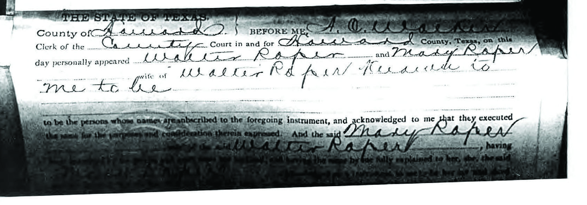
05-147-roper · ACU CRS MS5 - 05 - Folder 2, Correspondence and Legal Papers.pdf · PDF scan 147
Native crop [300, 985, 1930, 1770], after 0° counterclockwise rotation. Open original at full size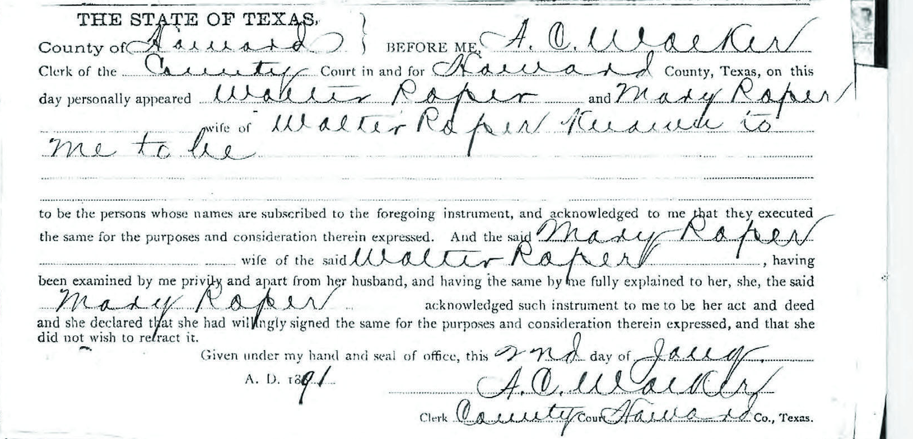
05-147-U002
Clearer duplicate witness · 05-147-P04 · source scan 147
Earlier annotation: [[obscured: overlying sheet]]
[[separate block: exposed underlying acknowledgment]] / [[obscured: overlying sheet]] of the Said E L Winniford having been Examined by me privily and
Text-only review proposal: Before me [[Raept Sudris?]] a notary Public ... E L. Winniford & Millie Winniford wife of E L Winniford ... and the Said Millie Winniford wife (05-149-P02)
Image review: Covered opening appears on 05-149-P02
The exposed continuation of the Said E L Winniford matches the uncovered acknowledgment in scan 149. The name of the notary remains partly unresolved there; do not import the earlier Raept Sudris guess as certain text.
High for the overlap/link; wording must be attributed to the clearer scan.
Inspect 3 source crop(s)
05-147-bottom · ACU CRS MS5 - 05 - Folder 2, Correspondence and Legal Papers.pdf · PDF scan 147
Native crop [220, 2530, 1950, 3329], after 0° counterclockwise rotation. Open original at full size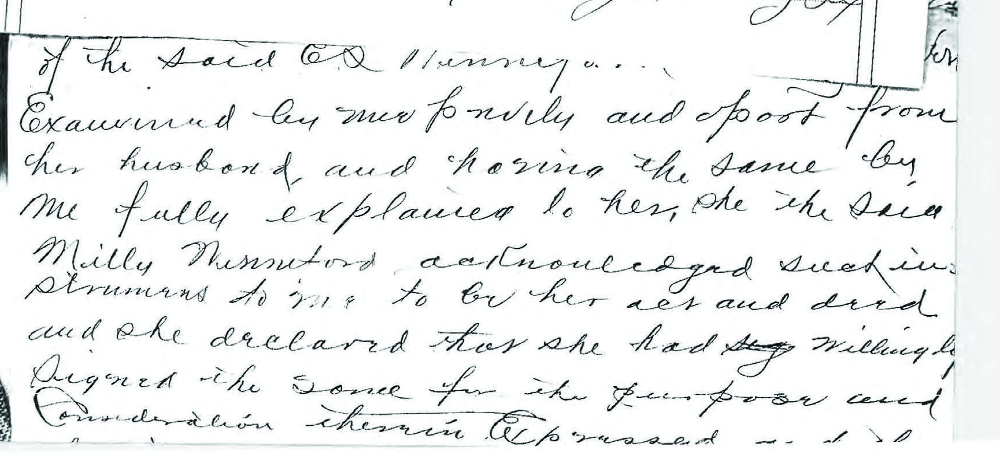
05-149-opening · ACU CRS MS5 - 05 - Folder 2, Correspondence and Legal Papers.pdf · PDF scan 149
Native crop [270, 610, 1970, 1920], after 180° counterclockwise rotation. Open original at full size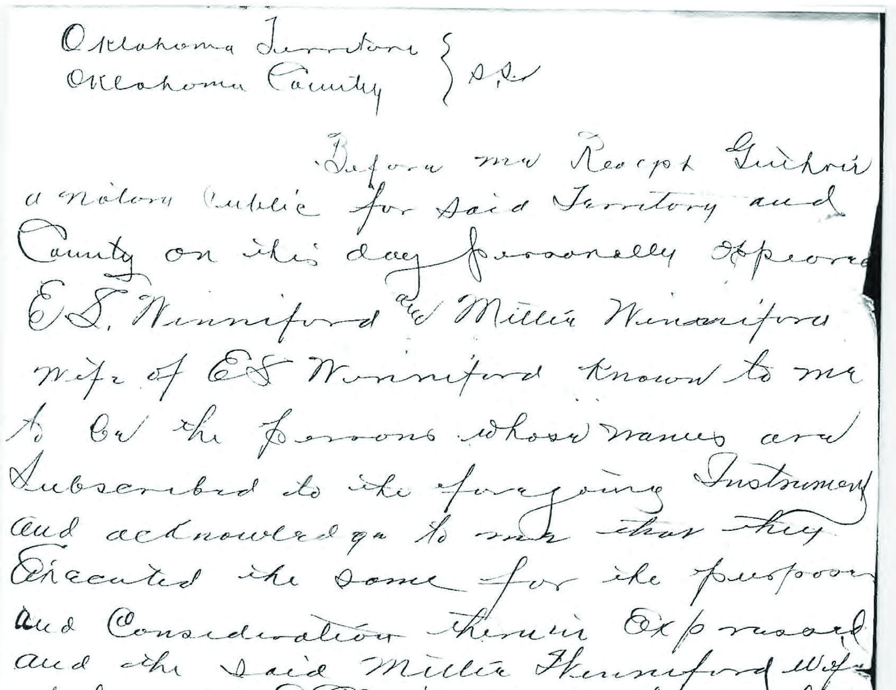
05-149-ending · ACU CRS MS5 - 05 - Folder 2, Correspondence and Legal Papers.pdf · PDF scan 149
Native crop [260, 1860, 1960, 3240], after 180° counterclockwise rotation. Open original at full size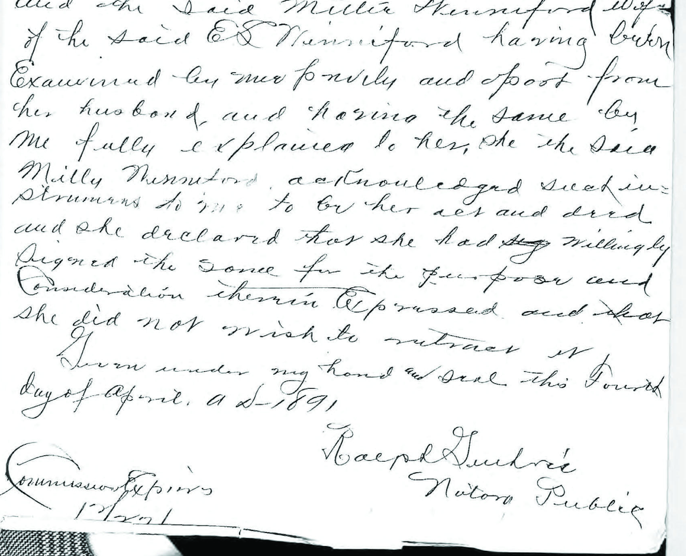
05-147-U004
Clearer duplicate witness · 05-147-P04 · source scan 147
Earlier annotation: [[lost: cropped bottom]]
ned the Same for the purpose and Consideration therein Expressed [[lost: cropped bottom]]
Text-only review proposal: and that She did not wish to retract it / Given under my hand and Seal this Fourth Day of April A D 1891 (05-149-P02/P03)
Image review: Continuation and closing visible on 05-149-P02–P03
The text ending consideration therein Expressed is followed in the uncovered scan by and that She did not wish to retract it and the dated closing. Retain the crop marker and cite the fuller witness.
High for the overlap/link; wording must be attributed to the clearer scan.
Inspect 2 source crop(s)
05-147-bottom · ACU CRS MS5 - 05 - Folder 2, Correspondence and Legal Papers.pdf · PDF scan 147
Native crop [220, 2530, 1950, 3329], after 0° counterclockwise rotation. Open original at full size05-149-ending · ACU CRS MS5 - 05 - Folder 2, Correspondence and Legal Papers.pdf · PDF scan 149
Native crop [260, 1860, 1960, 3240], after 180° counterclockwise rotation. Open original at full size05-148-U001
Clearer duplicate witness · 05-148-P03 · source scan 148
Earlier annotation: [[obscured: overlying sheet]]
[[separate block: exposed underlying acknowledgment]] / [[obscured: overlying sheet]] of the Said E L Winniford having been Examined by me privily and
Text-only review proposal: Before me [[Raept Sudris?]] a notary Public ... E L. Winniford & Millie Winniford wife of E L Winniford ... and the Said Millie Winniford wife (05-149-P02)
Image review: Covered opening appears on 05-149-P02
The lower exposed words and their line breaks match the same underlying sheet shown fully in 05-149. Keep the obstruction marker and link that witness; this duplicates the finding for 05-147-U002.
High for the overlap/link; wording must be attributed to the clearer scan.
Inspect 3 source crop(s)
05-148-bottom · ACU CRS MS5 - 05 - Folder 2, Correspondence and Legal Papers.pdf · PDF scan 148
Native crop [240, 2340, 2000, 3306], after 0° counterclockwise rotation. Open original at full size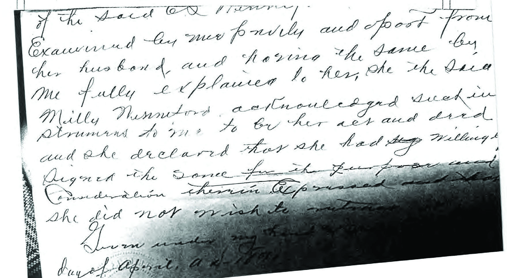
05-149-opening · ACU CRS MS5 - 05 - Folder 2, Correspondence and Legal Papers.pdf · PDF scan 149
Native crop [270, 610, 1970, 1920], after 180° counterclockwise rotation. Open original at full size05-149-ending · ACU CRS MS5 - 05 - Folder 2, Correspondence and Legal Papers.pdf · PDF scan 149
Native crop [260, 1860, 1960, 3240], after 180° counterclockwise rotation. Open original at full size05-148-U003
Clearer duplicate witness · 05-148-P03 · source scan 148
Earlier annotation: [[illegible: shadow]]
ssed and that She did not wish to retract it / Given under my hand [[illegible: shadow]] / Day of April A D 1891 [[lost: cropped bottom]]
Text-only review proposal: and Seal this Fourth (05-149-P03)
Image review: and Seal this Fourth, verified on 05-149-P03
The obscured closing aligns with the uncovered scan. Brightening scan 148 does not independently recover every letter; scan 149 visibly supplies and Seal this Fourth.
High for the overlap/link; wording must be attributed to the clearer scan.
Inspect 2 source crop(s)
05-148-bottom · ACU CRS MS5 - 05 - Folder 2, Correspondence and Legal Papers.pdf · PDF scan 148
Native crop [240, 2340, 2000, 3306], after 0° counterclockwise rotation. Open original at full size05-149-ending · ACU CRS MS5 - 05 - Folder 2, Correspondence and Legal Papers.pdf · PDF scan 149
Native crop [260, 1860, 1960, 3240], after 180° counterclockwise rotation. Open original at full size05-148-U004
Clearer duplicate witness · 05-148-P03 · source scan 148
Earlier annotation: [[lost: cropped bottom]]
/ Given under my hand [[illegible: shadow]] / Day of April A D 1891 [[lost: cropped bottom]]
Text-only review proposal: (continues as 05-149-P03)
Image review: Closing signature and commission note continue on 05-149-P03
The complete underlying sheet carries the date, notary’s signature, office and commission-expiry note. Preserve uncertainties in those elements, including the given name and expiry reading, rather than filling the cropped area with confident guesses.
High for the overlap/link; wording must be attributed to the clearer scan.
Inspect 2 source crop(s)
05-148-bottom · ACU CRS MS5 - 05 - Folder 2, Correspondence and Legal Papers.pdf · PDF scan 148
Native crop [240, 2340, 2000, 3306], after 0° counterclockwise rotation. Open original at full size05-149-ending · ACU CRS MS5 - 05 - Folder 2, Correspondence and Legal Papers.pdf · PDF scan 149
Native crop [260, 1860, 1960, 3240], after 180° counterclockwise rotation. Open original at full size05-149-U001
Partial reading · 05-149-P02 · source scan 149
Earlier annotation: [[Raept Sudris?]]
Before me [[Raept Sudris?]] a notary Public for Said Territory and County on this day person
Text-only review proposal: Conflicting independent readings: Raept Sudris / Reese Guthrie
Image review: [given name unread] Guthrie
Both the body and signature show G-u-t-h-r-i-e. The given name remains difficult; neither Raept nor Reese is established. Recover only the surname and retain an explicit uncertainty for the given name.
High for Guthrie only; given name remains unread.
Inspect 2 source crop(s)
05-149-opening · ACU CRS MS5 - 05 - Folder 2, Correspondence and Legal Papers.pdf · PDF scan 149
Native crop [270, 610, 1970, 1920], after 180° counterclockwise rotation. Open original at full size05-149-ending · ACU CRS MS5 - 05 - Folder 2, Correspondence and Legal Papers.pdf · PDF scan 149
Native crop [260, 1860, 1960, 3240], after 180° counterclockwise rotation. Open original at full size05-149-U003
Partial reading · 05-149-P03 · source scan 149
Earlier annotation: [[Raept Sudris?]]
Given under my hand and Seal this Fourth Day of April A D 1891 / [[Raept Sudris?]] / Notary Public / Commission Expires / [[1-1-91?]]
Text-only review proposal: Conflicting independent readings: Raept Sudris / Reese Guthrie
Image review: [given name unread] Guthrie
The repeated surname in the signature confirms Guthrie. This is a second occurrence of the same notary’s name, not independent biographical identification. Leave the given name unread.
High for Guthrie only; given name remains unread.
Inspect 2 source crop(s)
05-149-ending · ACU CRS MS5 - 05 - Folder 2, Correspondence and Legal Papers.pdf · PDF scan 149
Native crop [260, 1860, 1960, 3240], after 180° counterclockwise rotation. Open original at full size05-149-opening · ACU CRS MS5 - 05 - Folder 2, Correspondence and Legal Papers.pdf · PDF scan 149
Native crop [270, 610, 1970, 1920], after 180° counterclockwise rotation. Open original at full size06-008-U003
Image-supported reading · 06-008-P02 · source scan 8
Earlier annotation: [[91?]]
/ Recorded May 29 A. D. 1896 in Ellis County Record of Deeds Book [[91?]] Page 574 / T. F. Thompson County Clerk / By A Lasswell Deputy. / Recor
Text-only review proposal: 92
Image review: 91; certificate on 06-011 says 92
The docket’s final digit is a single ascending stroke, matching 1, without the curved head and lower return of 2. The separately written certificate visibly says 92. Preserve 91 here and report the disagreement; do not harmonize the two documents.
High for the stated literal reading within this AI review; not independently human verified.
Inspect 2 source crop(s)
06-008-docket · ACU CRS MS5 - 06 - Folder 3, Correspondence and Legal Papers.pdf · PDF scan 8
Native crop [740, 1270, 1430, 1890], after 0° counterclockwise rotation. Open original at full size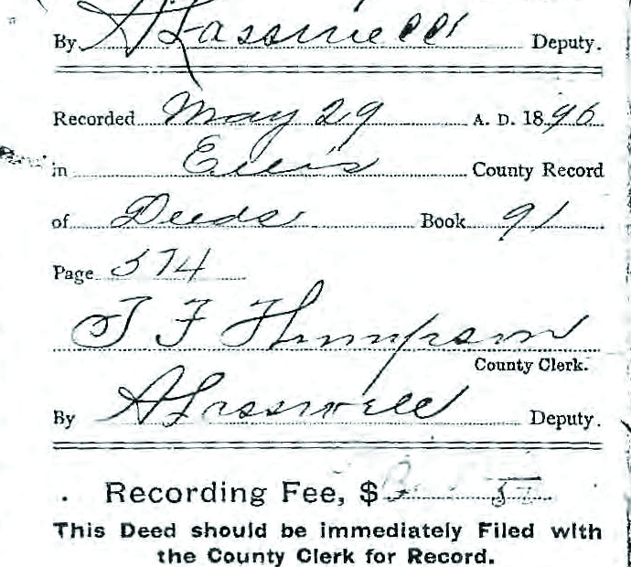
06-011-record · ACU CRS MS5 - 06 - Folder 3, Correspondence and Legal Papers.pdf · PDF scan 11
Native crop [340, 2240, 1900, 2850], after 0° counterclockwise rotation. Open original at full size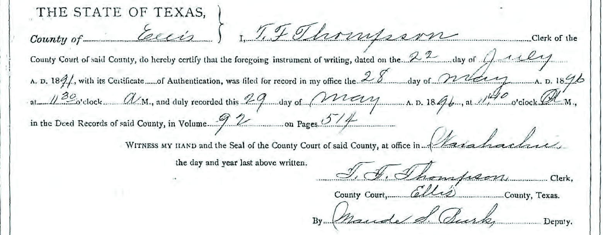
06-008-U004
Unresolved · 06-008-P02 · source scan 8
Earlier annotation: [[2.75?]]
. F. Thompson County Clerk / By A Lasswell Deputy. / Recording Fee, $[[2.75?]] / This Deed Should be Immediately Filed with the County Clerk for
Text-only review proposal: Conflicting independent readings: 2.75 / 2.50
Image review: 2.75 / 2.50 unresolved
The amount is very faded. The last stroke resembles 5, but the preceding cents digit is not reliable enough to settle the competing proposals. The paid amount cannot be inferred from the deed-book reference.
Insufficient evidence to remove the marker.
Inspect 1 source crop(s)
06-008-docket · ACU CRS MS5 - 06 - Folder 3, Correspondence and Legal Papers.pdf · PDF scan 8
Native crop [740, 1270, 1430, 1890], after 0° counterclockwise rotation. Open original at full size06-063-U001
Image-supported reading · 06-063-P01 · source scan 63
Earlier annotation: [[Stinnet?]]
have a horrible tale to recount this week tis the murder of Mrs [[Stinnet?]] by her daughter. Mrs [[S?]] is a sister to Mr [[Simons?]] was he
Text-only review proposal: Claunch
Image review: Claunch
The enlarged word shows Cl, au and the nch ending. The separate report in 04-017 uses the same surname for a similar reported event. This corroborates the transcription; the accusation remains the letter writer’s account.
High for the stated literal reading within this AI review; not independently human verified.
Inspect 2 source crop(s)
06-063-opening · ACU CRS MS5 - 06 - Folder 3, Correspondence and Legal Papers.pdf · PDF scan 63
Native crop [370, 1280, 1920, 1560], after 180° counterclockwise rotation. Open original at full size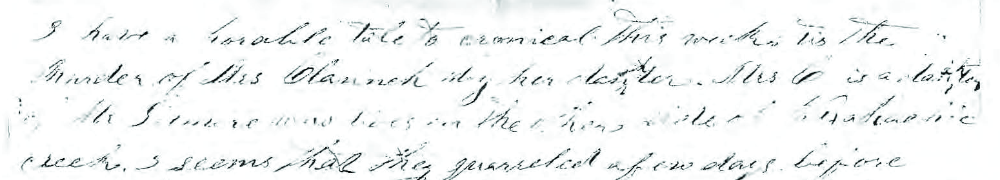
04-017-claunch · ACU CRS MS5 - 04 - Folder 1, Correspondence and Loan Papers.pdf · PDF scan 17
Native crop [250, 1240, 2030, 1440], after 90° counterclockwise rotation. Open original at full size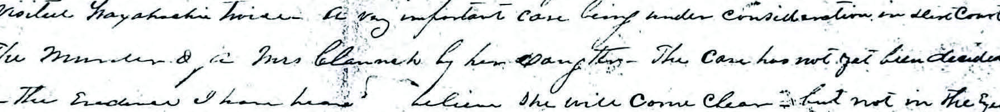
06-063-U002
Image-supported reading · 06-063-P01 · source scan 63
Earlier annotation: [[S?]]
his week tis the murder of Mrs [[Stinnet?]] by her daughter. Mrs [[S?]] is a sister to Mr [[Simons?]] was here in the spring [[illegible
Text-only review proposal: C[launch]
Image review: C
The abbreviation after Mrs is an open, rounded capital C, matching the initial of Claunch in the previous clause. Retain C rather than expanding the surname into the literal text.
High for the stated literal reading within this AI review; not independently human verified.
Inspect 1 source crop(s)
06-063-opening · ACU CRS MS5 - 06 - Folder 3, Correspondence and Legal Papers.pdf · PDF scan 63
Native crop [370, 1280, 1920, 1560], after 180° counterclockwise rotation. Open original at full size06-063-U003
Unresolved · 06-063-P01 · source scan 63
Earlier annotation: [[Simons?]]
f Mrs [[Stinnet?]] by her daughter. Mrs [[S?]] is a sister to Mr [[Simons?]] was here in the spring [[illegible]] creek. It seems that they q
Text-only review proposal: Conflicting independent readings: Simons / Jennings
Image review: Simons / Simmons / Jennings unresolved
The initial resembles S more than J, but the small interior strokes are broken. Simons or Simmons may fit; the scan does not justify resolving the name. Neither family-version agreement nor the murder narrative proves the brother’s identity.
Insufficient evidence to remove the marker.
Inspect 1 source crop(s)
06-063-opening · ACU CRS MS5 - 06 - Folder 3, Correspondence and Legal Papers.pdf · PDF scan 63
Native crop [370, 1280, 1920, 1560], after 180° counterclockwise rotation. Open original at full size06-063-U004
Unresolved · 06-063-P01 · source scan 63
Earlier annotation: [[illegible]]
Mrs [[S?]] is a sister to Mr [[Simons?]] was here in the spring [[illegible]] creek. It seems that they quarreled a few days before when the g
Text-only review proposal: No proposal
Image review: Span before creek remains unread
The line is badly faded and the earlier surrounding transcription may also be inaccurate. A possible reference to Waxahachie is only a lead. The whole line needs a fresh transcription; no word is inserted into the current gap.
Insufficient evidence to remove the marker.
Inspect 1 source crop(s)
06-063-opening · ACU CRS MS5 - 06 - Folder 3, Correspondence and Legal Papers.pdf · PDF scan 63
Native crop [370, 1280, 1920, 1560], after 180° counterclockwise rotation. Open original at full size06-116-U001
Unresolved · 06-116-P02 · source scan 116
Earlier annotation: [[Lis's?]]
Saturday 6th This morning Mother, Laura and I went over to [[Lis's?]] [[illegible]] Bro Goodman preached [[illegible]] a literary [[il
Text-only review proposal: Conflicting independent readings: Lis's / Louisa
Image review: Lis’s / alternative place or activity unresolved
Native crop and darkening do not establish the destination or activity. The two editions disagree in surrounding names and syntax, so the old word boundaries themselves are not a reliable template for filling this slot.
Insufficient evidence to remove the marker.
Inspect 1 source crop(s)
06-116-opening · ACU CRS MS5 - 06 - Folder 3, Correspondence and Legal Papers.pdf · PDF scan 116
Native crop [690, 1610, 1720, 1960], after 180° counterclockwise rotation. Open original at full size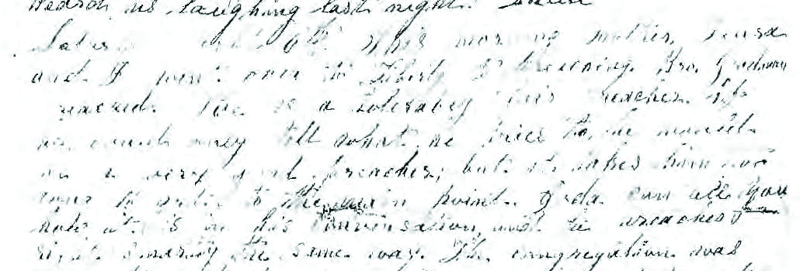
06-116-U002
Unresolved · 06-116-P02 · source scan 116
Earlier annotation: [[illegible]]
day 6th This morning Mother, Laura and I went over to [[Lis's?]] [[illegible]] Bro Goodman preached [[illegible]] a literary [[illegible]] disc
Text-only review proposal: No proposal
Image review: Unclear span before Bro Goodman retained
Some strokes survive but do not support a complete reading. The opening needs line-by-line retranscription from a better witness; avoid turning a grammatical expectation into text.
Insufficient evidence to remove the marker.
Inspect 1 source crop(s)
06-116-opening · ACU CRS MS5 - 06 - Folder 3, Correspondence and Legal Papers.pdf · PDF scan 116
Native crop [690, 1610, 1720, 1960], after 180° counterclockwise rotation. Open original at full size06-116-U003
Unresolved · 06-116-P02 · source scan 116
Earlier annotation: [[illegible]]
and I went over to [[Lis's?]] [[illegible]] Bro Goodman preached [[illegible]] a literary [[illegible]] discourse. He [[illegible]] may [[illeg
Text-only review proposal: No proposal
Image review: Unclear span after preached retained
The faded line appears different from the earlier transcript in several places. Neither darkening nor OCR establishes the words between the current anchors.
Insufficient evidence to remove the marker.
Inspect 1 source crop(s)
06-116-opening · ACU CRS MS5 - 06 - Folder 3, Correspondence and Legal Papers.pdf · PDF scan 116
Native crop [690, 1610, 1720, 1960], after 180° counterclockwise rotation. Open original at full size06-116-U004
Unresolved · 06-116-P02 · source scan 116
Earlier annotation: [[illegible]]
s?]] [[illegible]] Bro Goodman preached [[illegible]] a literary [[illegible]] discourse. He [[illegible]] may [[illegible]] What a [[illegible
Text-only review proposal: No proposal
Image review: Unclear span before discourse retained
The earlier confident anchor literary is itself questionable on this image. Keep this gap and flag the entire clause for review instead of accepting a fluent reconstruction around possibly wrong anchors.
Insufficient evidence to remove the marker.
Inspect 1 source crop(s)
06-116-opening · ACU CRS MS5 - 06 - Folder 3, Correspondence and Legal Papers.pdf · PDF scan 116
Native crop [690, 1610, 1720, 1960], after 180° counterclockwise rotation. Open original at full size06-116-U005
Unresolved · 06-116-P02 · source scan 116
Earlier annotation: [[illegible]]
an preached [[illegible]] a literary [[illegible]] discourse. He [[illegible]] may [[illegible]] What a [[illegible]] to be [[illegible]] for a
Text-only review proposal: No proposal
Image review: Unclear span after He retained
Several letter fragments are visible, but they do not establish a continuous phrase. OCR returns unstable strings. No complete reading is defensible from the supplied copy in this pilot.
Insufficient evidence to remove the marker.
Inspect 1 source crop(s)
06-116-opening · ACU CRS MS5 - 06 - Folder 3, Correspondence and Legal Papers.pdf · PDF scan 116
Native crop [690, 1610, 1720, 1960], after 180° counterclockwise rotation. Open original at full size